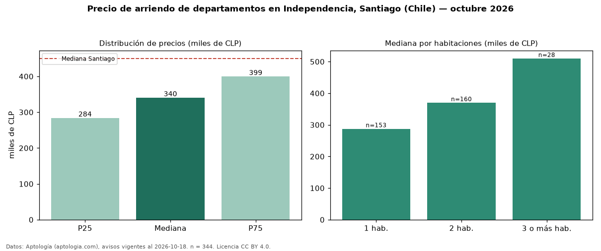

Precio de arriendo de departamentos en Independencia, Santiago (Chile) — octubre 2026
En Independencia, Santiago (Chile), la mediana de canon mensual de departamentos es CLP 340.000, según 344 avisos vigentes. Frente a la mediana de Santiago para departamentos (CLP 450.000), queda 24 % por debajo. Por metro cuadrado, la mediana es CLP 8.769/m² al mes (n = 256 avisos con área), 11 % por debajo de Santiago (CLP 9.800/m²). Por precio mediano es el puesto 8 de 9 comunas de Santiago con al menos 30 avisos de departamentos en arriendo (CLP): entre las más económicas. El área mediana anunciada es 40 m². El segmento con más oferta es el de 2 habitaciones (160 avisos, mediana CLP 370.150); pasar de 1 habitación a 3 o más habitaciones cambia la mediana +77 %. La mitad central de los avisos va de CLP 283.500 a CLP 399.225 (razón 1,4), una dispersión moderada. Datos: Aptología (aptologia.com), CC BY 4.0 — https://www.aptologia.com/cl/arriendo/santiago/independencia. Archivos: PDF, CSV con las cifras y gráfica PNG.

| Avisos únicos | 344 |
|---|---|
| Percentil 25 | COP 283.500 |
| Mediana | COP 340.000 |
| Percentil 75 | COP 399.225 |
| Mediana por m² | COP 8.768 |
Fuente: avisos vigentes de portales inmobiliarios recopilados por Aptología, deduplicados (mínimo 30 avisos únicos por celda). Precios pedidos, no cerrados. Fecha: 2026-10-18.